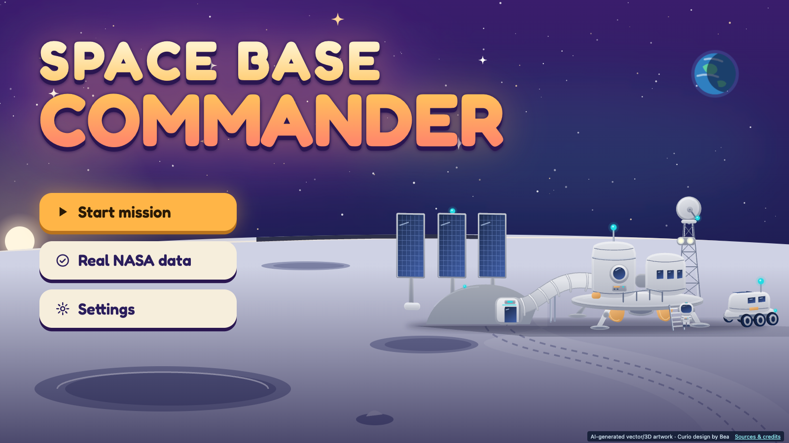
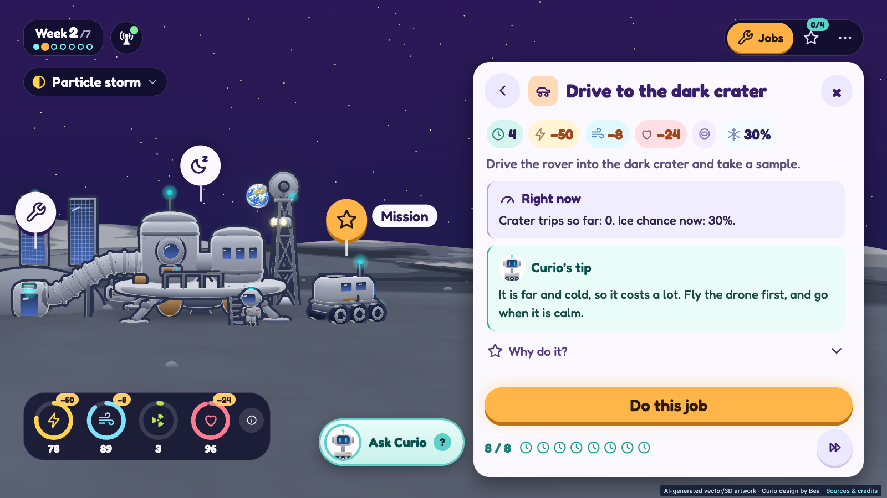
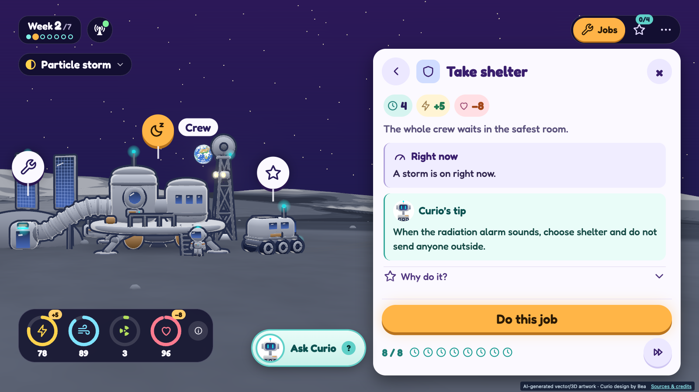
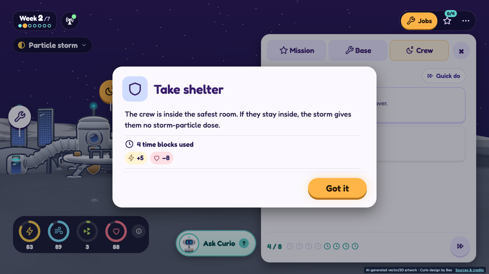
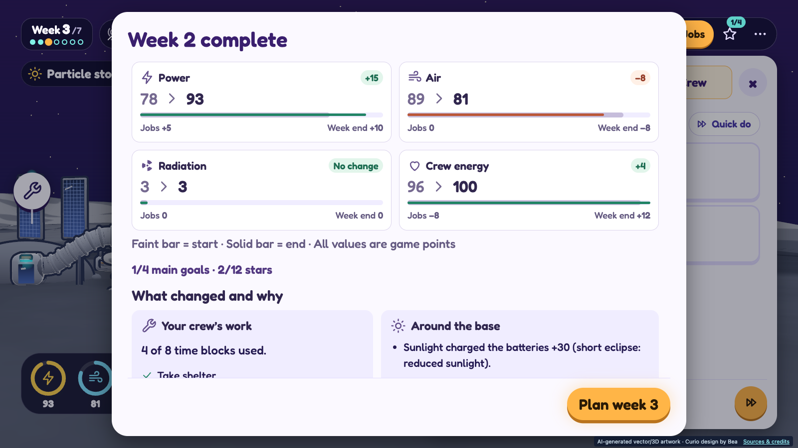
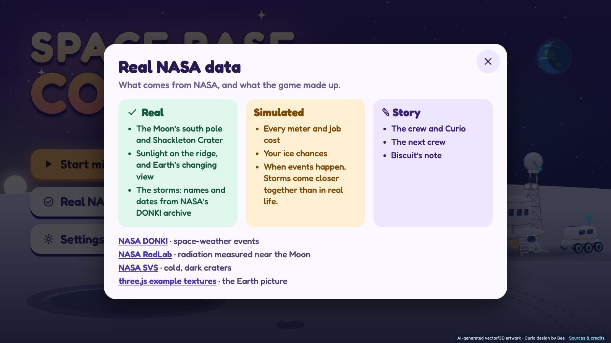
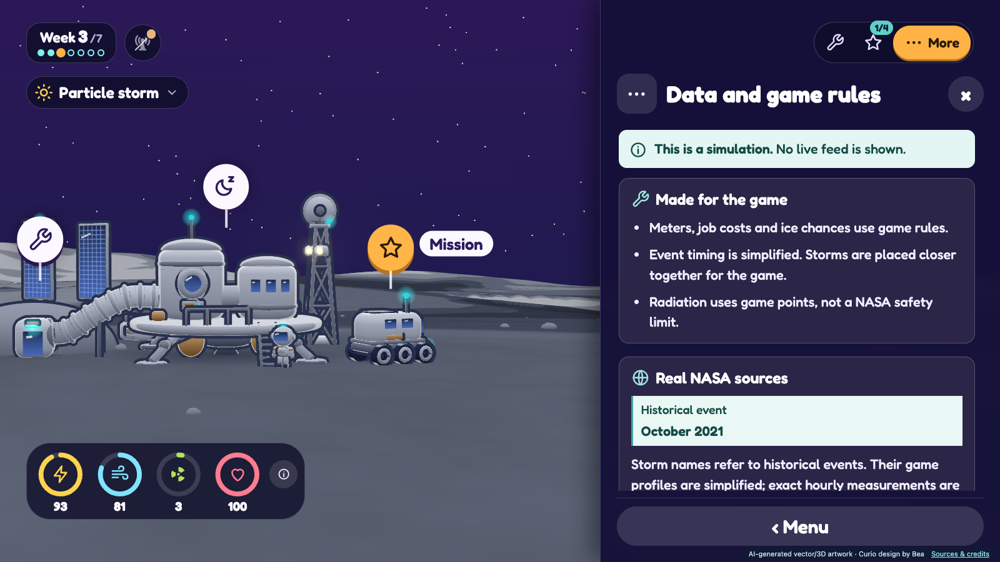
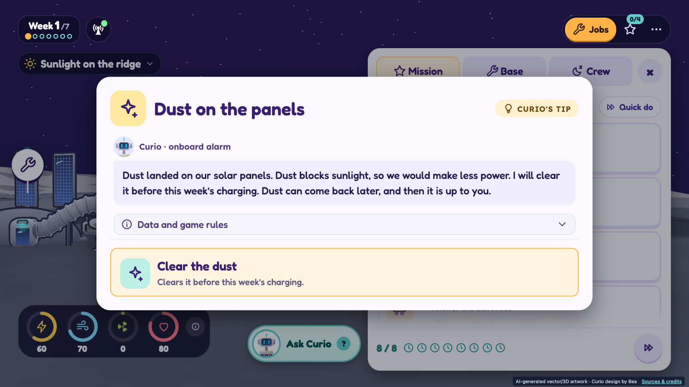
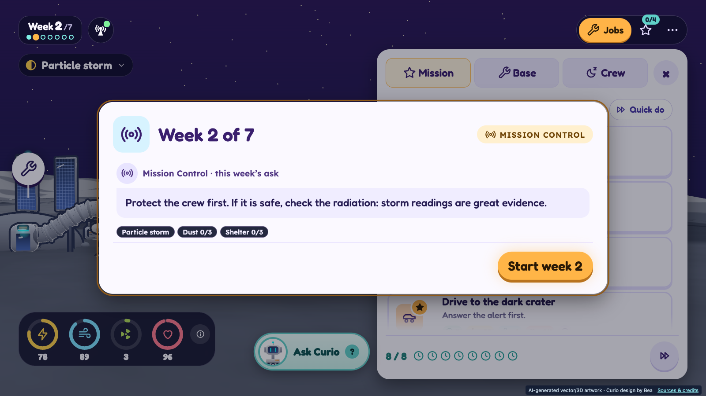
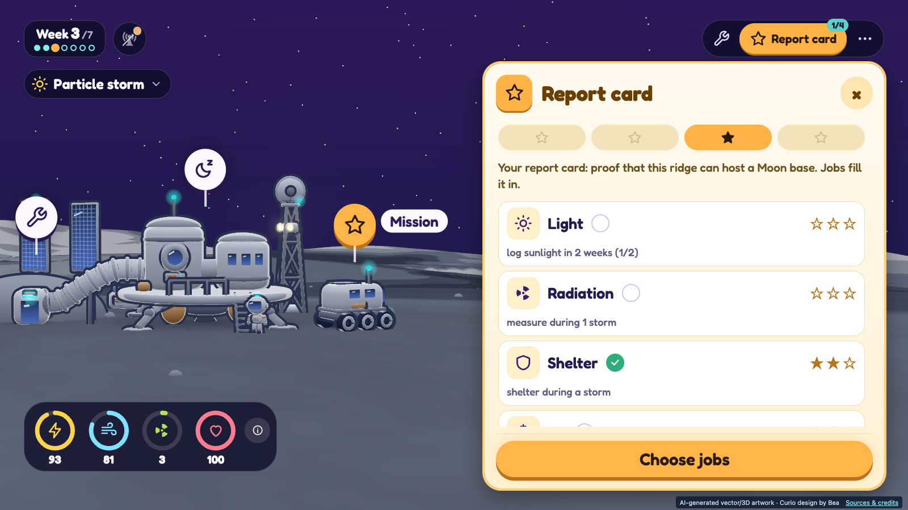

A mission-planning game for children ages 7–12, inspired by NASA science.
NASA DONKI records solar events. CRaTER measures radiation near the Moon; NASA RadLab provides access to those records. Our prototype includes a May 2024 archive.
Historical observations — not live. These are lunar-orbit instrument readings, not doses on the surface or astronaut health limits.
Jobs compete for crew time, power and air. Outside work adds radiation exposure.

Drive to the dark crater
4 time blocks, −50 power, −8 air, −24 crew energy. Outside work.

Take shelter
4 time blocks, +5 power, −8 crew energy. Staying inside, the storm adds no storm-particle dose.
Real concepts — sunlight, radiation and shelter — turned into choices. The numbers are simplified game costs, shown before you commit.
Read the costs. Choose a job. See its result. At week’s end, a recap shows how your work and base conditions changed the mission.

1. The job result: time and meter costs, plus why.

2. The week recap: jobs and weekly changes, kept separate. Same run, real numbers.
Archived DONKI and CRaTER records, and NASA lunar science.
Our game modelCrew, mission schedule, resource costs and exposure points.
The game teaches planning, not astronaut health limits.

Title screen · Real NASA data

In game · Data and game rules
Curio guides the first week. A seven-week mission investigates sunlight, radiation, shelter and ice. Results and recaps help players rethink their plan.

Week 1: Curio explains each step.

Every week: Mission Control’s ask.

Report card: your evidence.
Next: refine data mapping and evidence tracking; test understanding with children. Learning benefit is intended, not yet measured.
Play Space Base Commander. Explore the sources. Try another plan.